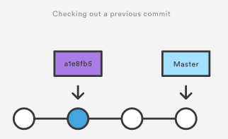
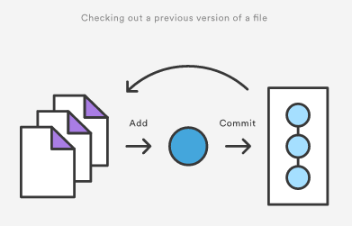

[译]git checkout
git checkout
git checkout提供3种不同的功能:
checking out文件, checking out commits, checking out branch.
checkout commit会让你的工作目录整个回到某个commit的状态下. 你可以使用checkout commit查看你项目的老的版本, 而不需要担心会影响你项目的current状态. checkout一个文件会真正影响你的项目的current状态.
用法
git checkout master
回到master这个branch.
git checkout <commit> <file>
指定一个文件回到某个commit时的版本. 工作目录的<file>文件会完整copy<commit>中的文件的内容, 并且会被添加到stage区中.
git checkout <commit>
把工作目录所有的文件都回到指定的commit中时的状态. <commit>可以是一个hash或者一个tag. 运行后你是在一个detached HEAD的状态.怎么理解这个detached HEAD状态呢？ 可以简单的说这个时候你运行git checkout master还是能回到最初那个真正的HEAD里面的状态. 你在detached状态里面做的修改(add, commit)其实不会真正有什么影响, 一git checkout master马上还原到最初的状态. 但是如果这个时候你使用git checkout -b <new branch> 创建一个新的分支, 然后git checkout master git merge <new branch> 你做的修改才会真正的起到作用.
讨论
一旦你创立了项目历史, git checkout能让你的本地机器的工作目录回到任何快照的时候.
checkout一个老的commit是一个只读的操作. 查看老的版本不会对你的仓储有什么影响. 你项目的当前状态还是在master这个branch里面, 没受什么影响. HEAD通常是指向master或者某个本地分支, 但是一旦你checkout了一个老的commit, HEAD不在指向分支, 而是指向你这个老的commit, 这就是所谓的detached HEAD状态.

不同的是, checkout一个老的文件会影响你仓储的当前状态. 你可以重新commit这个老版本的文件到新的快照中去. 所以git checkout可以让你指定的文件回到一个老的版本.

例子
查看一个老的版本
这个例子假设你要在你的项目中做一些疯狂的实验, 你不确定是否要保存你在这个实验中所做的工作. 首先你需要找到你想要的版本的ID.
git log --oneline
项目的历史如下:
b7119f2 Continue doing crazy things 872fa7e Try something crazy a1e8fb5 Make some important changes to hello.py 435b61d Create hello.py 9773e52 Initial import
使用checkout 去查看“Make some import changes to hello.py”这个commit:
git checkout a1e8fb5
这时你的工作目录回到了a1e8fb5 commit的状态下. 这个时候你可以做任何你想要做的修改而不用担心你会破坏你的项目. 你在这做的任何操作都不会保存在你的仓储中. 使用下面的命令回到你项目的current状态中:
git checkout master
checkout一个文件
如果你只对某一个文件感兴趣, 你可以使用git checkout去获取这个文件的老版本. 例如, 如果只是想查看hello.py文件的一个老的版本, 你可以使用下面的命令:
git checkout a1e8fb5 hello.py
注意了, 和checkout一个commit不同, checkout文件会真正影响你项目的当前状态. 如果你不想要这个老版本了, 你可以checkout最新的版本:
git checkout HEAD hello.py